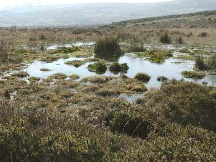

Sunday, December the 4th, 2011
back to: title, date or indexes
Today's advent calendar picture shows a bog, or more precisely a blanket bog. (A blanket bog ought not be confused with a Blunkett bog, which is the type of bog the blind philandering erstwhile Labour Home Secretary may stumble into when attacked by cows.) This particular bog is on Dartmoor, but I suspect it is similar to an Isle of Wight bog through which Margo Williams may be dragged by her ghostly spirit guides.
